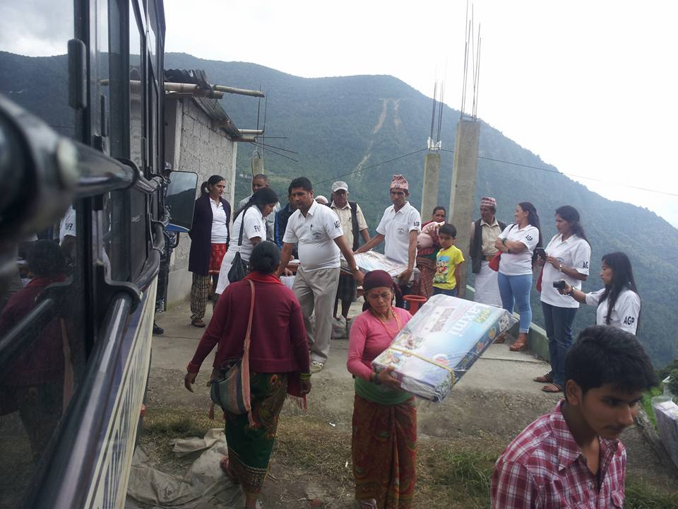

Waarom het corona noodfonds?
Net als Europa en de rest van de wereld is Nepal economisch diep in zijn ziel geraakt door corona. In een land als Nepal dat na de verwoestende aardbeving van 2015 uit een heel diep dal langzaam naar boven krabbelt, komt deze crisis extra hard aan. De Nepalese regering heeft het land volledig in een "lock down" gezet om een verdere verspreiding van het coronavirus in te dammen. De arme Nepalezen die van dag tot dag leven komen direct in de problemen met hun levensonderhoud, omdat er geen levensmiddelen voorhanden zijn. Een overgroot deel van de Nepalezen is volledig afhankelijk van de inkomsten uit loonarbeid. Als dit wegvalt, is er geen vangnet waar ze aanspraak op kunnen maken.
Velen van deze arbeiders zitten momenteel gevangen in de steden, of ze zijn terug in hun dorpen, maar geen werk betekent ook geen eten. Er is niemand die zich om deze mensen bekommert. De overheid is helaas niet in staat om de arme bevolking tegemoet te komen. Verder heeft Nepal onvoldoende ziekenhuiscapaciteit om een eventuele uitbraak het hoofd te bieden.
In de dorpen zijn helemaal geen medische voorzieningen met betrekking tot corona. Bovendien is er een groot tekort aan middelen als mondkapjes, paracetamol, desinfecterende handgel, etc. Door de torenhoge prijsstijging zijn deze middelen voor arme bevolking onbereikbaar. De Wereld Gezondheid Organisatie (WHO) ziet Nepal als een potentieel risico gebied voor corona. Er wordt dan ook voor een catastrofe gevreesd als het tot een uitbraak komt.
Voor wie en hoe komt het terecht?
Net als in 2015 ten tijde van de verwoestende aardbeving slaan stichting NDA en Nepalfonds de handen ineen om de kwetsbare Nepalezen te helpen met noodhulp als voedsel en medisch-hygienische middelen en de wederopbouw van Nepal. Sinds enkele weken is Nepal op slot en moet iedereen binnen blijven. De overheid treedt met harde hand op als iemand zich buiten waagt. Vooral de allerarmste bevolking die van de dag tot dag economie moet hebben is het directe slachtoffer van de overheidsmaatregelen geworden. Ze hebben geen eten, geen medicatie en krijgen geen hulp van de overheid.

Inmiddels is er in Nepal een groot tekort aan levensmiddelen en medicijnen ontstaan. De prijsstijging is enorm hoog en dus voor velen niet betaalbaar. Doordat de overheid zich alleen op de corona uitbraak richt, dreigt een humanitaire ramp te ontstaan bij de arme en dakloze bevolking.
Met het coronafonds voor Nepal gaan we de allerarmsten bevolking in de afgelegen gebieden die direct getroffen is, helpen met levens- en hygienische middelen. We werken daarvoor samen met onze lokale partners die als vrijwilliger dagelijks mensen in nood aan het helpen zijn. Het voorzien in de eerste levensbehoeften en in hygienische middelen van Nepalezen die door het coronacrisis getroffen zijn, is de hoofddoelstelling van het coronafonds Nepal.
Hoe kunt u helpen?
U draagt Nepal altijd al een warm hart toe waar we zeer dankbaar voor zijn. Ook nu is uw steun meer dan welkom!
U kunt uw bijdrage overmaken naar:
NL49 ABNA 0471642002 t.a.v.: stichting NDA o.v.v. CoronaNepal
Contact
Stichting NDA
2e Oosterparklaan 157
3544 AP Utrecht
Tel.: 06-48182704
Tel.: 06-48182704
www.coronafondsnepal.nl